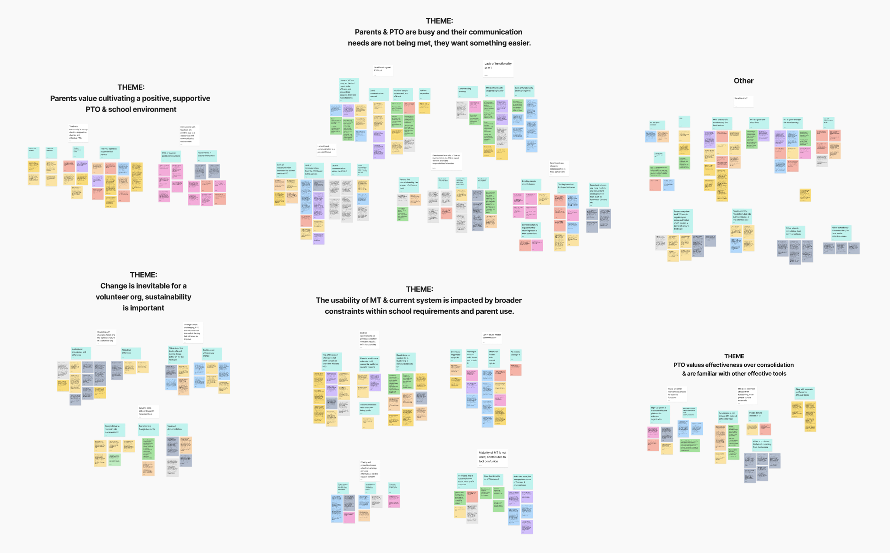
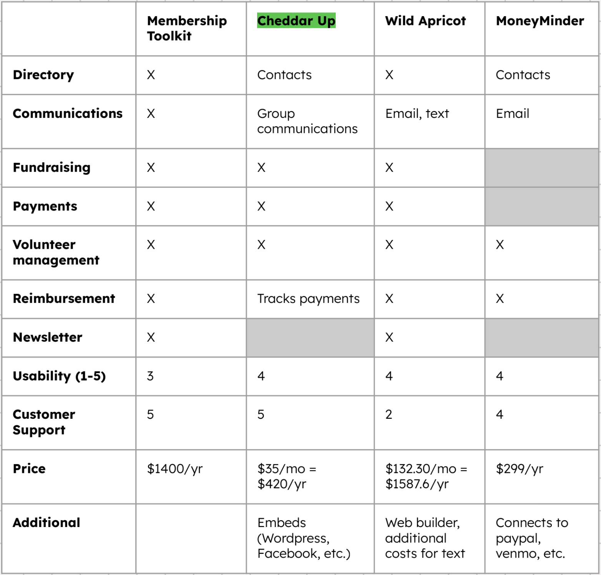
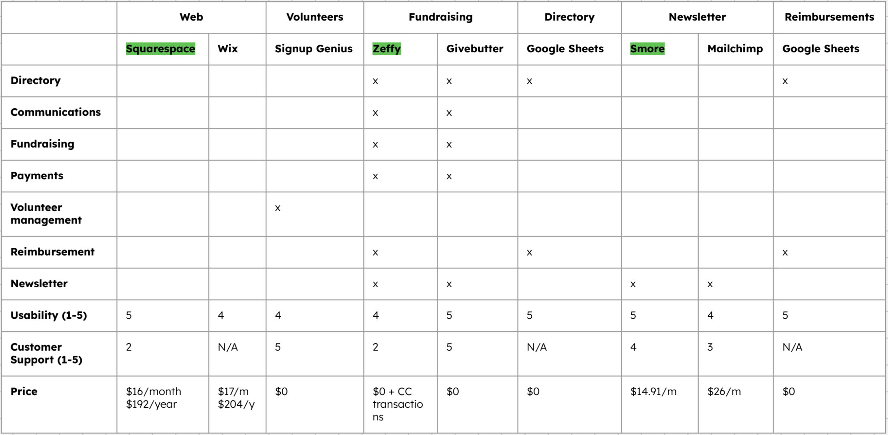

Overview
Rising costs exposed deeper communication and maintenance problems
Bach Elementary PTO used Membership Toolkit for communication, fundraising, volunteer coordination, and parent engagement. As costs rose by more than 200%, parents and board members questioned whether the all-in-one system still fit their needs.
The board also changes every year. Any recommendation needed to be easy for busy parents to use, practical for volunteers to maintain, and straightforward for incoming leaders to learn.
Research
We studied the system through the people responsible for using and sustaining it
The research included board members, room parents, parents, teachers, and representatives from other schools. I conducted ten interviews and one focus group, then led a reflexive thematic analysis.
- All-in-one did not mean one workflow. Board members still relied on outside tools to complete important tasks.
- Information overload caused disengagement. Parents received messages across too many channels and struggled to find what required action.
- Leadership turnover was the largest usability risk. Tools needed to be easy to learn, document, and hand off every year.
- Privacy constraints limited every option. District rules and opt-in requirements affected directory access regardless of platform.

Comparative analysis
We compared a consolidated platform with a modular ecosystem
| Approach | Strengths | Risks |
|---|---|---|
| Consolidated platform | Includes many PTO functions in one product. | Higher cost, steeper learning curve, and difficult long-term maintenance. |
| Combined ecosystem | Flexible, lower-cost, and aligned with tools people already use. | Requires clear ownership, documentation, and onboarding across tools. |


Recommendation
A combined ecosystem balanced parent and board-member needs
We recommended a set of focused tools, each with a clear purpose:
- Squarespace
- Website
- Smore
- Newsletter
- Zeffy
- Fundraising
- SignupGenius
- Volunteer coordination
- Google Workspace
- Operations
The recommendation was designed to be easier for busy parents, simpler to hand off to new board members, and flexible enough to match varied PTO workflows.
Tools alone could not solve the underlying problem
We paired the platform recommendation with role-specific onboarding checklists, clearer ownership, fewer redundant communications, and documentation for recurring tasks such as newsletters, volunteer signups, reimbursements, and fundraising setup.
Impact
The PTO launched the recommended ecosystem and cut platform costs by 79%
Months after we delivered the report, Bach PTO’s new site went live. The new ecosystem formalized tools board members were already using and added family-controlled directory, donation, and reimbursement experiences that mapped directly to research findings.
The report was shared with other schools facing similar challenges and was selected as Project of the Year from more than 120 student projects at the University of Michigan School of Information.
What I learned
Seeing the goals, constraints, and responsibilities of every stakeholder made the recommendation more sustainable. The project also reinforced that complex organizational problems rarely have a single software fix; the surrounding workflows and handoffs matter just as much.
This case study is adapted from the original Bach PTO project page .